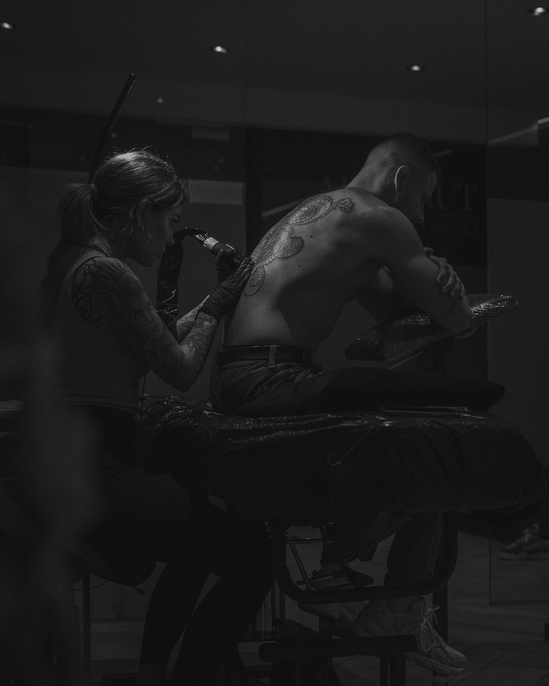

Realisme

Tattoo studio · Stationsstraat 72, Lanaken (BE) · enkel op afspraak
Sinds 2018
Rauwe kunst op huid
Vier artiesten, vier handschriften. De beste tattoo is er een die jouw statement perfect belichaamt — daarom tekenen we mee, denken we mee en gaat de naald pas op de huid als het ontwerp klopt.
01 — De studio
De beste tattoo is er een die jouw statement perfect belichaamt.
Art Brut is in 2018 geopend door Fleur de Vries aan de Stationsstraat 72 in Lanaken. Vandaag werken er vier artiesten, elk met een eigen handschrift: van realisme en black & grey tot fineline, dotwork en ornamental.
Wij tekenen mee en denken mee. De naald gaat pas op je huid als het ontwerp klopt. Dat kost tijd — dat is precies de bedoeling. Werken kan enkel op afspraak.
2018Opgericht
4Artiesten
8,1KVolgers op Instagram
100%Aanbevolen · 17 reviews
De artiesten
02 — Vier handschriften
02
Chayenne Fraiquin
Black & grey · lettering · micro-realisme · surrealisme · fineline
03
Lenn de Meij
Dikkere lijnen · simpele shading · fineline · peppershading
@lensonnable
04
Yaël Sherah
Fineline · ornamental · dotwork · floral & mandala · blackwork
@yael.sherah.tattoo
Het werk
03 — Zeven stijlen
Black & grey
Fineline

Dotwork
Ornamental
Freehand
Cover up
Zo boek je
04 — Van idee naar afspraak
01
Stuur je idee
Beschrijf je idee, de plaatsing, de maximale grootte en of je black & grey of kleur wil. Voorbeelden mogen erbij.
02
Kies je artiest
Noem de artiest van je voorkeur en geef aan of een leerling-tatoeëerder ook mag.
03
Voorschot
Je afspraak staat vast zodra het voorschot binnen is. Verplaatsen kan eenmalig kosteloos tot 72 uur van tevoren.
04
Get your ass here
Stationsstraat 72, Lanaken. Enkel op afspraak.
Gezegd
05 — Uit de Google reviews
Er is in mijn ogen geen betere tattoo artieste te vinden. Begrijpt heel goed wat je wilt, denkt enorm mee en is super getalenteerd.
De studio was heel schoon en professioneel, wat meteen vertrouwen gaf.
Kom al ongeveer 10 jaar bij Fleur, vertrouw haar als geen ander! Ze heeft echt talent voor tekenen en tattoo's zetten.
Get your
ass here
- Adres
- Stationsstraat 72, 3620 Lanaken (BE)
- @artbrut_tattoo
- Openingstijden
- Enkel op afspraak
Art Brut Tattoo Studio
Conceptontwerp · Kelvantis × Studio N3ms · niet definitief · augustus 2026